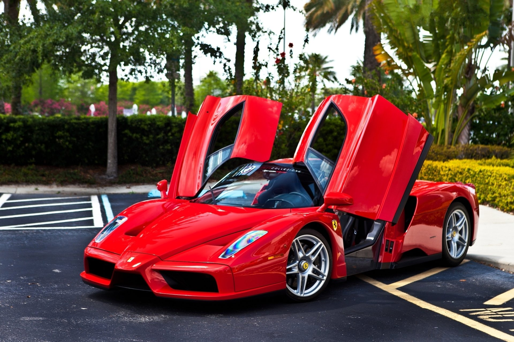
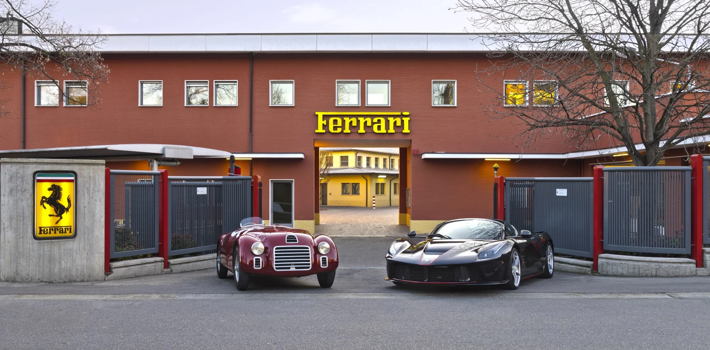

História

A Ferrari foi fundada por Enzo Ferrari em 1947, em Maranello, na Itália. No entanto, a história da empresa remonta à década de 1920, quando Enzo Ferrari iniciou sua carreira como piloto de corrida e depois se tornou um importante dirigente da equipe de corrida da Alfa Romeo.
Enzo Ferrari tinha o sonho de construir seus próprios carros, e em 1947, ele finalmente lançou o primeiro automóvel com o emblema da Ferrari, o 125 S. Esse carro apresentava um motor V12 e foi o ponto de partida para o sucesso da marca.
A Ferrari começou a competir em corridas logo após seu surgimento e obteve sucesso significativo nas pistas, conquistando inúmeros títulos e vitórias em várias competições, incluindo a Fórmula 1. A equipe de Fórmula 1 da Ferrari é uma das mais antigas e bem-sucedidas, com uma história repleta de lendas como Niki Lauda, Michael Schumacher e mais recentemente, Sebastian Vettel.
Ao longo dos anos, a Ferrari expandiu sua linha de modelos, produzindo carros esportivos e de luxo destinados ao público em geral. Esses veículos são conhecidos por sua combinação de desempenho de alto nível, tecnologia avançada e design inovador. Alguns dos modelos icônicos da Ferrari incluem o Ferrari Testarossa, F40, F50, Enzo, LaFerrari e o mais recente SF90 Stradale.
A Ferrari também é famosa por sua marca registrada, o Cavallino Rampante (cavalo empinado), que é um símbolo de poder e elegância. Além disso, a cor vermelha é amplamente associada à marca Ferrari, sendo conhecida como "vermelho Ferrari".
Hoje, a Ferrari é uma das marcas de carros mais reconhecidas e desejadas do mundo. Seus veículos são considerados símbolos de status e luxo, e a empresa continua a produzir carros exclusivos, combinando tradição e inovação para satisfazer os entusiastas automotivos em todo o mundo.
Museu

O Museo Ferrari, também conhecido como Ferrari Museum, é um local dedicado a exibir a rica história e os lendários carros da Ferrari. Existem dois museus oficiais da Ferrari, ambos localizados na Itália: o Museo Ferrari em Maranello e o Museo Enzo Ferrari em Modena. Vou falar um pouco sobre cada um deles:
Museo Ferrari em Maranello:
Localizado próximo à fábrica da Ferrari em Maranello, o Museo Ferrari é uma atração popular para os fãs de carros e entusiastas da marca. O museu abriga uma coleção notável de carros de corrida e carros de rua da Ferrari, exibindo a evolução dos modelos ao longo dos anos.
Os visitantes podem explorar diversas exposições interativas e aprender sobre a história da Ferrari, desde os primeiros modelos até os carros mais recentes e inovadores. Além disso, há uma galeria dedicada à vida de Enzo Ferrari, fundador da marca.
Uma das principais atrações do Museo Ferrari em Maranello é a oportunidade de ver de perto carros icônicos, como o modelo de Fórmula 1 atual, além de carros clássicos e raros. Também é possível visitar a pista de testes da Ferrari, o Fiorano Circuit, que está localizada nas proximidades.
Museo Enzo Ferrari em Modena:
O Museo Enzo Ferrari está situado na cidade de Modena, que é o local de nascimento de Enzo Ferrari. O museu é dividido em duas partes: uma seção moderna, conhecida como "Otel'Liberta", e a Casa Enzo Ferrari, que é a antiga oficina onde Enzo Ferrari construiu seus primeiros carros.
A seção moderna apresenta exposições temáticas, com ênfase na tecnologia, inovação e design da Ferrari. Os visitantes podem explorar uma variedade de exposições interativas, vídeos e displays multimídia que destacam a herança e o legado da marca.
Já a Casa Enzo Ferrari, a antiga oficina, foi convertida em um espaço expositivo que conta a história pessoal de Enzo Ferrari, exibindo fotografias, documentos e objetos relacionados à vida e à carreira do fundador da Ferrari.
Tanto o Museo Ferrari em Maranello quanto o Museo Enzo Ferrari em Modena oferecem uma experiência fascinante para os fãs da Ferrari, permitindo que os visitantes mergulhem na história, na paixão e no legado da marca. É uma oportunidade única de conhecer de perto os carros lendários que fizeram da Ferrari uma das marcas automotivas mais icônicas do mundo.
Fábrica

A fábrica da Ferrari em Maranello, Itália, é o coração da produção dos famosos carros esportivos da marca. Localizada na região da Emília-Romanha, a fábrica ocupa uma área extensa e é um local icônico para os entusiastas da Ferrari.
A fábrica em Maranello é o principal centro de produção da Ferrari, onde são fabricados todos os modelos da marca, desde os carros de estrada até os veículos de competição. A produção na fábrica é um processo meticuloso, que combina alta tecnologia com a habilidade artesanal italiana.
Ao visitar a fábrica, os visitantes têm a oportunidade de conhecer de perto o processo de fabricação dos carros Ferrari. A fábrica abriga diversas oficinas, cada uma dedicada a diferentes etapas da produção. Isso inclui áreas como a construção de motores, a montagem dos chassis, a pintura dos veículos e a instalação de componentes internos
Os carros Ferrari são conhecidos por sua atenção aos detalhes e pela busca constante da excelência. Os técnicos altamente qualificados trabalham com precisão para garantir que cada veículo atenda aos padrões de qualidade e desempenho estabelecidos pela marca.
Além da produção, a fábrica da Ferrari em Maranello também abriga uma série de outras instalações. Isso inclui um centro de pesquisa e desenvolvimento, onde engenheiros e designers trabalham para aprimorar continuamente os veículos e explorar novas tecnologias.
Há também o Museu Ferrari, chamado de "Museo Ferrari" ou "Ferrari Museum", localizado próximo à fábrica. O museu exibe uma coleção impressionante de carros clássicos e históricos da Ferrari, além de exposições interativas que contam a história da marca e seu legado nas corridas.
A fábrica da Ferrari em Maranello é um destino imperdível para os fãs da marca e entusiastas de carros em geral. Ela oferece uma experiência única, permitindo que os visitantes mergulhem na história, na paixão e na inovação que tornaram a Ferrari uma das marcas automotivas mais emblemáticas do mundo.